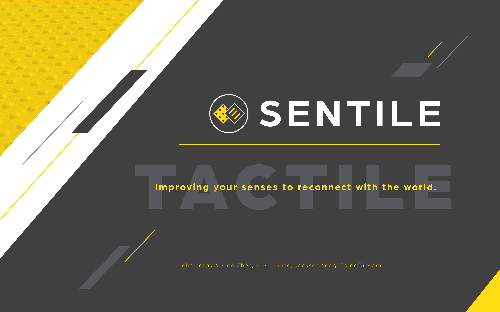

FEATURED PROJECTS

Stranger Danager Mobile Application (UX/UI Design)

University has honed my design skills - creating graphics, prototyping products, and conducting user testing for several of my projects. Over these years I have cultivated my ability to effectively communicate ideas to people. I have also discovered that I enjoy client interaction and the challenge of designing products with user needs in mind. Furthermore, it brings me a great satisfaction to simplify and optimize workflows, products, and user interactions. I aspire to be an even greater visual designer using my design and problem-solving skills to connect people and industries together in a positive way.
On the side you can find me on the badminton court, gaming (Overwatch anyone?), or satisfying my unhealthy obsession for bubble tea.